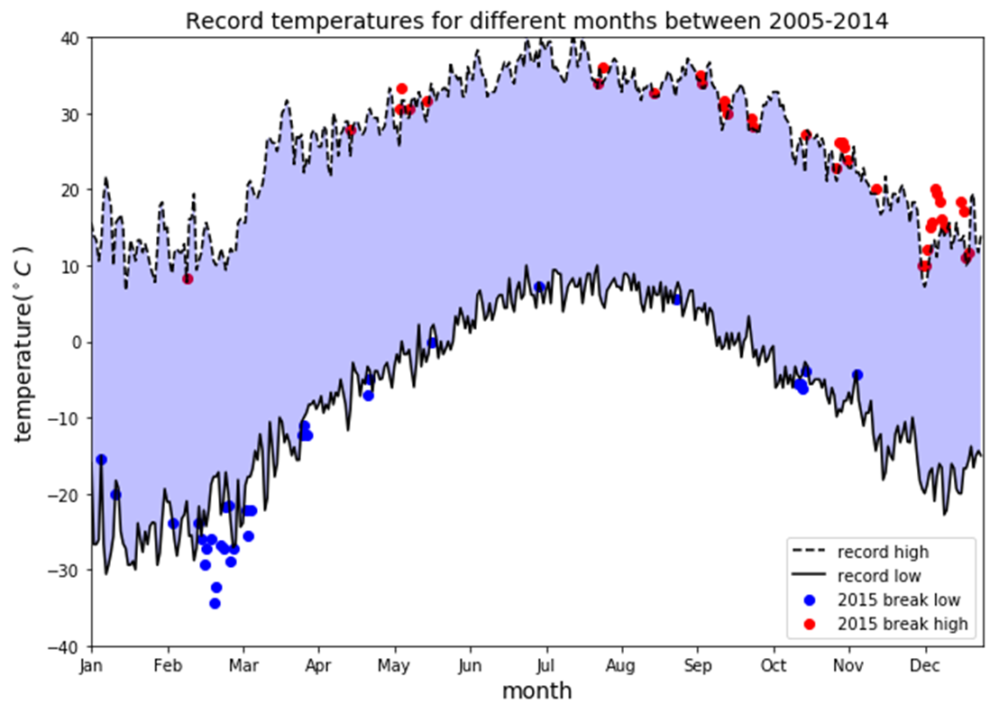
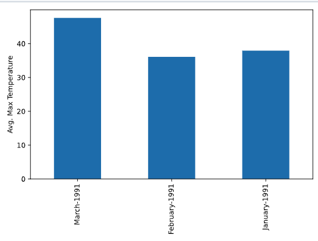

Available on my GitHub
In this project we are given data about the weather in a specific location. The application the populates this data into a Kafka stream using a producer Python program. A consumer Python program consumes data from the stream to produce JSON files with summary stats, for use on a web dashboard. For simiplicity, the project uses a single Kafka broker rather than a cluster. The data collected is then displayed on a graph using matplotlib.pyplot.
The purpose of this project is to learn how to use Kafka streaming to produce and collect data in real-time and then display that data visually.
My main contributions for this project was that I wrote the consumer code, which received the information from the producer, implemented exactly-once semantics to ensure each message/measurement should be counted exactly once in the output stats, store the data in a JSON file with a specified dictionary format, and display it on a graph using matplotlib.pyplot.